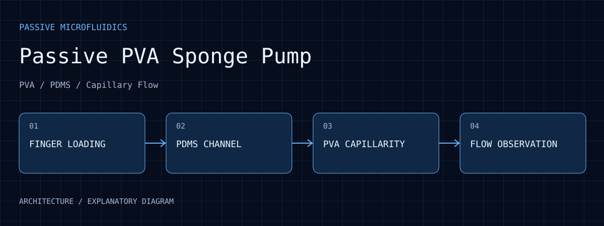

Research output
The master's research developed a prototype combining finger loading, PVA absorption and PDMS packaging.
Passive PVA Sponge Pump
Master's research combining finger-initiated loading, PVA sponge capillarity, height differences, and PDMS packaging to study electricity-free microfluidic pumping.

01 / PURPOSE
Reduce dependence on large external electric pumps and assess a portable fluid-driving prototype.
02 / ARCHITECTURE
Finger-actuated loading reduces dependence on external drive equipment.
PDMS packaging connects the sample path to the absorbing end.
PVA capillary uptake and height difference jointly influence transport.
Liquid movement, filling and absorption are interpreted under the original experiment conditions.
03 / WORKFLOW
Check the channel and sponge state, then start loading by finger actuation.
Liquid travels through the PDMS channel to the absorbing end.
PVA capillarity and height difference support passive transport.
Record filling and flow to understand differences between conditions.
04 / EVIDENCE
The master's research developed a prototype combining finger loading, PVA absorption and PDMS packaging.
Passive drive reduces electrical and controller requirements for simplified microfluidic operation.
Flow and operating duration depend on sponge wetting, geometry and fluid properties.
Architecture, workflow and inspectable records explain the outcomes. No photograph or screenshot meeting the presentation criteria has been selected for this page.
05 / ANALYSIS
Capillary uptake depends on the absorber state. Progressive wetting can change transport, making a time sequence more informative than one photograph.
Placement and liquid-level differences affect pressure. Retain the same reference for cross-run comparisons.
A passive design reduces electronics while making material, geometry and initial conditions central to flow adjustment.
06 / REPRODUCE
07 / LIMITS
A prototype and master's thesis were completed. This resume-based summary adds no flow-rate or clinical-benefit claims and does not attribute later biomimetic-platform awards to this study.
08 / SOURCES
Selected photographs and plots retain their original content. Captions identify prototype, archived, analysis or simulation material.